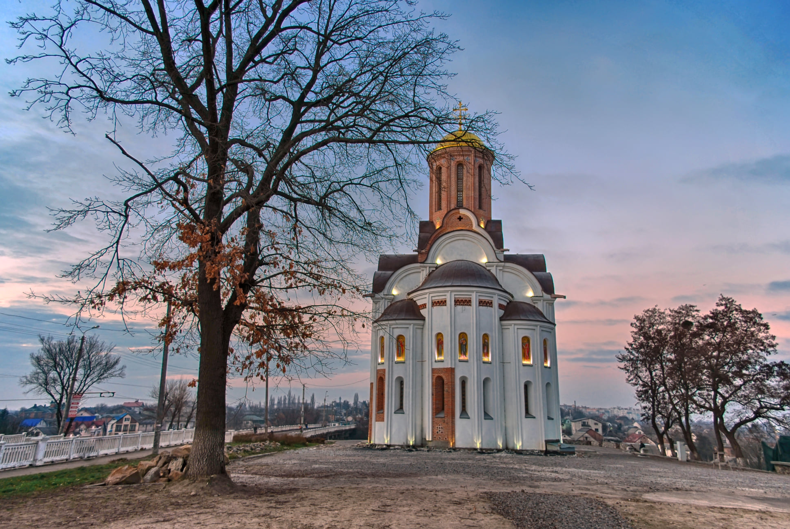
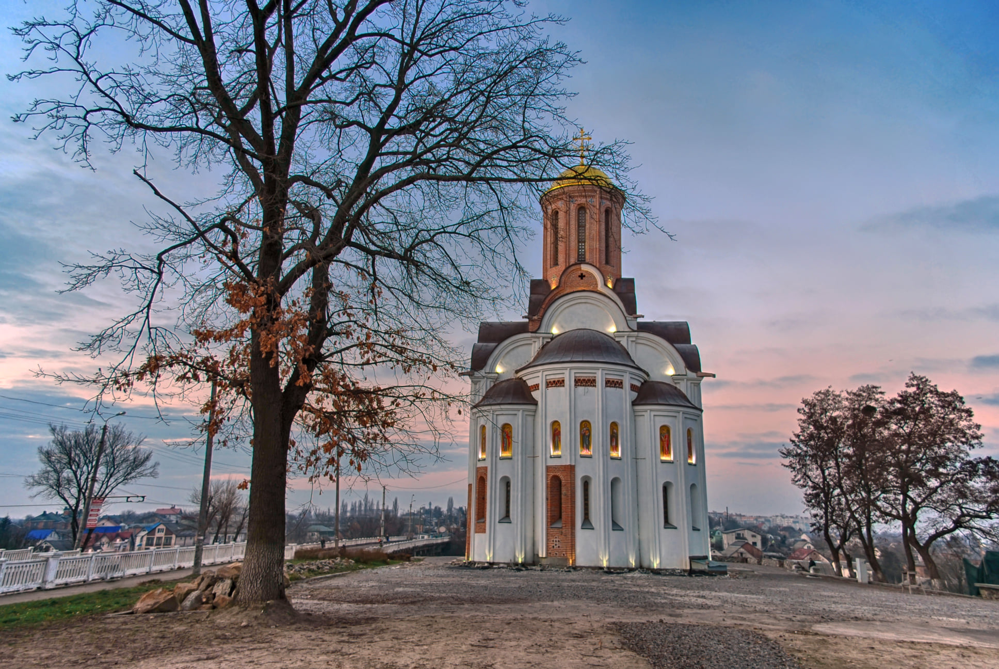

Бі́ла Це́рква — місто в Україні, значний економічний, культурний та освітній центр Київщини, розташований за 80 км на південь від Києва на річці Рось. Найбільше місто в Київській області.
Вперше назва «Біла Церква» згадується в Іпатіївському літописі 1555 року. У літописі говориться, що місто лежало в центральній частині Поросся. Через нього проходили торговельні шляхи на Київ, Вінницю, в арабські країни, Індію, Угорщину
Дендропарк «Олександрія» — видатна пам'ятка садово-паркового мистецтва України, яка розташована в Білій Церкві, на лівому березі річки Росі, площа 297 га. Заснований наприкінці XVIII ст., як заміська резиденція польських графів Браницьких. Автором генерального проєкту парку став відомий французький архітектор-паркобудівник Мюффо. Пізніше в парку працювали відомі майстри садово-паркового мистецтва Д. Ботані, А. Єнц, А. Станге, Р. Чех та інші. На території парку поєднуються природні пейзажі з численними архітектурними спорудами — альтанками, павільйонами, колонадами, містками, фонтанами з романтичними назвами (водоспад Руїни, Турецький будиночок, Китайський місток, Колона смутку, колонада «Луна» та інші). У колекції заповідного парку зібрано понад 2130 видів росли.
 

Рось в історичній частині міста із видом на Костел святого Івана Хрестителя. На північно-західній околиці міста розташований державний дендрологічний парк «Олександрія». Це найбільший архітектурно оформлений ландшафтний парк в Україні[11]. Дендропарк розташований на площі 297 га на березі річки Рось. Площа декоративних водойм парку (ставки і Рось) становить 21 га. Загальна довжина алей і доріжок становить понад 20 км. Парк є зразком пейзажної паркової композиції, основу якої складають рослини, архітектурні споруди, скульптури, водна гладь річки Рось та ставків.
Уздовж вулиці Клінічна розташований парк «Будівельників». На його території тривалий час існувало військове кладовище, яке згодом було перепоховано. Робітники домобудівельного комбінату заклали парк, у якому збудували міську льодову ковзанку та дитячі майданчики. Починаючи з 12 липня 2000 року, споруджується храм Святих апостолів Петра і Павла[12].
У місті є 3 бульвари: Олександрійський, Михайла Грушевського та Княгині Ольги.

Головною водоймою є річка Рось, яка 16 км протікає здебільшого південною частиною міста, відокремлюючи центральні райони від Заріччя (сучасні Заріччя та житлові масиви Піщаний і Таращанський). Протока тече Білою Церквою 9,6 км і впадає в Рось. А в урочищі Сухий Яр є Сухоярський струмок довжиною 9,6 км. Через Рось у межах міста прокладені 4 мости: 2 пішохідні (Дерев'яний міст та Зарічанська гребля) та 2 автомобільних. Річку Протоку перетинає значна кількість маленьких містків різноманітної конструкції.
У місті багато невеликих скверів та парків, що розташовані в історичному центрі. Важливу роль у культурному житті Білої Церкви відіграє здавна відомий міський парк культури і відпочинку імені Т. Г. Шевченка[10]. Також у центрі міста розміщений парк Слави.
Державний дендрологічний парк «Олександрія» — унікальна пам'ятка садово — паркового мистецтва кінця XVIII — початку XIX ст.